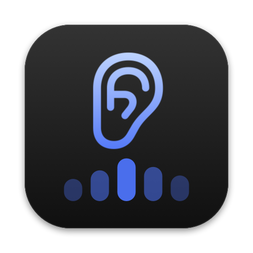
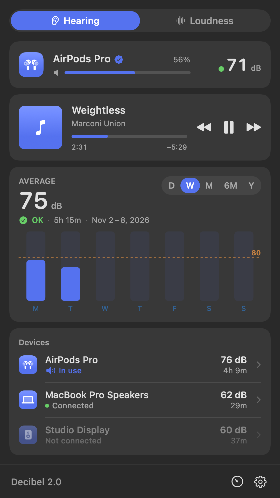

Hvor høyt hører du egentlig?
Last ned for Mac
Grønt, gult eller rødt.
Hodetelefoner og høyttalere.
Sjekk mot −14 før YouTube.
curl -fsSL https://raw.githubusercontent.com/ml450/decibel/main/scripts/install.sh | zsh
Den oppdaterer seg selv etterpå.
Lastet ned zip? Første gang: Systeminnstillinger › Personvern og sikkerhet › Åpne likevel.